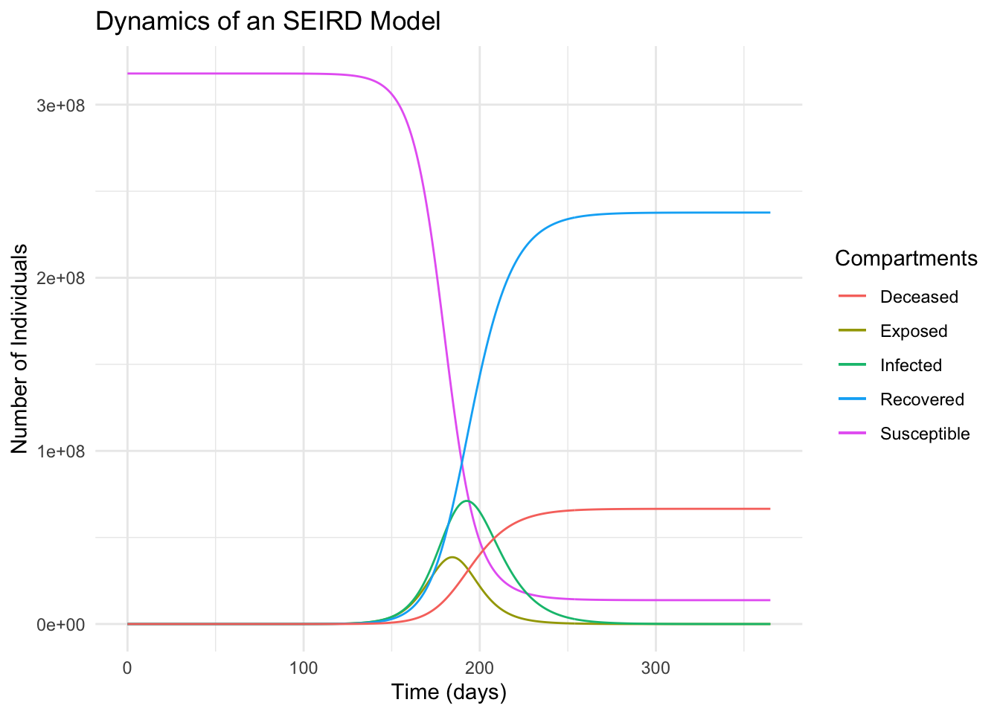

The SIR model is a basic framework used to understand the spread of infectious diseases. It divides the population into three compartments: Susceptible, Infectious, and Recovered. This model helps in predicting disease spread and the impact of interventions.
Susceptible Individuals: People not yet infected but at risk of catching the disease.
Infectious Individuals: Infected people who can spread the disease to others.
Recovered Individuals: People who have recovered from the infection and are no longer infectious.
Transition Dynamics: Movement between compartments based on infection and recovery rates.
Model Applications: Used for epidemic prediction, understanding disease dynamics, and informing public health policies.
INFECTION DYNAMICS
he transition from Susceptible to Infectious in disease models is determined by several key factors. These factors influence how quickly and efficiently a disease can spread through a susceptible population. Understanding these components is crucial for effective disease management and control.
Contact Rate: Frequency of interaction between susceptible and infectious individuals. Transmission Probability: Likelihood of disease transmission during a contact. Population Density: Higher densities can lead to increased contact rates. Duration of Exposure: Longer exposure times can increase the risk of transmission. Immune System Strength: Individuals with weaker immune systems are more likely to transition from susceptible to infectious.
RECOVERY DYNAMICS
The transition from the Infectious to Recovered stage in disease models is influenced by a range of factors. These factors determine the rate and efficiency of recovery, impacting the overall dynamics of an epidemic. Understanding these influences is key to managing and predicting disease outcomes.
Medical Treatment: Access to and effectiveness of medical interventions. Immune Response: The strength and speed of the body’s immune response to the infection. Disease Severity: Variations in the severity of the disease among individuals. Age and Health: Age and overall health can significantly affect recovery rates. Social Support: The role of caregiving and community support in aiding recovery.
Understanding the Basic Reproduction Number: ( R_0 )
What is ( R_0 ) in Disease Modeling?
Definition: ( R_0 ) (Basic Reproduction Number) represents the average number of new infections caused by an infectious individual in a totally susceptible population.
Significance: Indicates how contagious a disease is.
Interpreting ( R_0 ):
Greater than 1: Disease is likely to spread in the population.
Less than 1: Disease spread will likely decrease and eventually stop.
Factors Influencing ( R_0 ):
Contact Rate: Frequency of interaction between people.
Transmission Probability: Likelihood of the disease spreading upon contact.
Duration of Infectiousness: How long an individual is infectious.
Implications:
Public Health Strategies: ( R_0 ) helps guide interventions like vaccination, social distancing, and lockdowns.
Epidemic Prediction: Understanding ( R_0 ) is key for predicting the potential scale of an outbreak.
EXPOSURE AND LATENCY
Adding the ‘Exposed’ compartment to disease models creates a more nuanced understanding of disease transmission dynamics. This compartment represents individuals who have been exposed to the disease but are not yet infectious. It bridges the gap between Susceptible and Infectious stages, offering a more realistic representation of disease spread.
Exposure Phase: Period between encountering the disease and becoming infectious. Latent Infection: Individuals in this stage are not yet symptomatic or contagious. Transition to Infectious: Exposed individuals eventually progress to the infectious stage. Indirect Transmission: Reflects diseases with an incubation period before symptoms show. Impact on Dynamics: Changes predictions and intervention strategies in disease modeling.
Adding Mortality: The ‘Deceased’ Compartment
Understanding the Impact of Mortality in Disease Models
Graph Elements: Each compartment represented as a line or curve over time.
Understanding the Graph:
Y-Axis: Number of individuals in each compartment.
X-Axis: Time progression.
Curves: Show how the population in each compartment changes over time.
Key Observations:
Infection Peak: Point where the ‘Infected’ curve reaches its maximum.
Vaccination Impact: How the ‘Vaccinated’ curve influences the other compartments.
Recovery and Mortality: Observing the transitions to ‘Recovered’ and ‘Deceased’ compartments.
Analytical Insights:
Disease Progression: Understand how the disease evolves and spreads over time.
Intervention Effectiveness: Assess the impact of public health interventions like vaccination.
Overview of the 1918 Influenza Outbreak
Characteristics of the 1918 Influenza Virus
Strain Type: H1N1 influenza A virus.
Global Impact: One of the deadliest pandemics in history, affecting one-third of the global population.
Estimated Model Parameters:
Transmission Rate: High, due to the virus’s efficient spread.
Recovery Rate: Varied, reflecting the different medical interventions and individual health statuses at the time.
Mortality Rate: Estimated at about 2-3%, significantly higher than typical seasonal influenza.
Discussion Points:
Virus Severity: Factors contributing to the high mortality rate and widespread impact.
Modeling Challenges: Considerations in accurately modeling the outbreak, given historical data limitations and variable medical interventions.
Hypothetical Scenario: 1918 Flu in Today’s Population
library(deSolve)library(tidyverse)
── Attaching core tidyverse packages ──────────────────────── tidyverse 2.0.0 ──
✔ dplyr 1.1.4 ✔ readr 2.1.4
✔ forcats 1.0.0 ✔ stringr 1.5.1
✔ ggplot2 3.4.4 ✔ tibble 3.2.1
✔ lubridate 1.9.3 ✔ tidyr 1.3.0
✔ purrr 1.0.2
── Conflicts ────────────────────────────────────────── tidyverse_conflicts() ──
✖ dplyr::filter() masks stats::filter()
✖ dplyr::lag() masks stats::lag()
ℹ Use the conflicted package (<http://conflicted.r-lib.org/>) to force all conflicts to become errors
# ParametersN <-318e6# Total populationinitial_infected <-1initial_exposed <-0initial_recovered <-0initial_deceased <-0beta <-0.3# Transmission rategamma <-1/14# Recovery rate (14 days recovery period)mu <-0.02# Mortality ratesigma <-1/5# Transition rate from exposed to infectious (5 days incubation period)# Initial stateinitial_state <-c(S = N - initial_infected - initial_exposed - initial_recovered - initial_deceased,E = initial_exposed,I = initial_infected,R = initial_recovered,D = initial_deceased)# SEIRD model equationsseird_model <-function(time, state, parameters) {with(as.list(c(state, parameters)), { dS <--beta * S * I / N dE <- beta * S * I / N - sigma * E dI <- sigma * E - gamma * I - mu * I dR <- gamma * I dD <- mu * Ireturn(list(c(dS, dE, dI, dR, dD))) })}# Timetime <-seq(0, 365, by =1) # 6 months# Solve the differential equationsoutput <-ode(y = initial_state, times = time, func = seird_model, parms =NULL)# Convert output to data frameoutput_df <-as.data.frame(output)# Create plot with ggplotggplot(data = output_df, aes(x = time)) +geom_line(aes(y = S, color ="Susceptible")) +geom_line(aes(y = E, color ="Exposed")) +geom_line(aes(y = I, color ="Infected")) +geom_line(aes(y = R, color ="Recovered")) +geom_line(aes(y = D, color ="Deceased")) +labs(title ="Dynamics of an SEIRD Model",x ="Time (days)",y ="Number of Individuals",color ="Compartments") +theme_minimal()

Non-Spatial Model Approach
Scenario: Reintroduction of the 1918 influenza virus into the modern-day population of the lower 48 states.
Model Assumption: The population is treated as one large, homogeneously mixing group.
Key Aspects:
Population Size: Total population of the continental United States.
Homogeneous Mixing: Assumes every individual has an equal chance of encountering the virus.
Disease Parameters: Utilizing known data of the 1918 flu regarding transmission rate, recovery rate, and mortality.
Discussion Points:
Infection Spread: Predicting how the virus would spread in a large, interconnected population without considering spatial differences.
Public Health Response: Exploring potential challenges and strategies in managing such a widespread outbreak under this model assumption.
Critical Assumptions of Non-Spatial Disease Models
Understanding the Foundations of Basic Compartment Models
Homogeneous Mixing: Assumes each individual has an equal chance of encountering and transmitting the disease to others.
Constant Population Size: No significant changes in population size due to births, deaths, or migration during the model’s timeframe.
Uniform Disease Parameters: Disease characteristics (like transmission rate) are consistent across the entire population.
No Spatial Variation: Assumes no differences in disease spread dynamics due to geographical or environmental factors.
Implications of These Assumptions:
Simplification of Real-world Complexity: These assumptions simplify the modeling process but may not capture the full complexity of real-world disease dynamics.
Understanding Limitations: Recognizing these limitations is crucial for interpreting model predictions and applying them to actual disease control strategies.
Incorporating Spatial Structure in Disease Models
The Role of Spatial Variation in Disease Dynamics
Spatial Structure: Recognizes variations in population distribution, density, and movement across different geographical areas.
Impact on Transmission: Spatial heterogeneity can lead to varied disease transmission rates due to differences in contact patterns and mobility.
Influencing Factors:
Environmental Variables: Factors like vaccination hesitancy, access to medical care, and social dynamics can vary spatially, influencing disease spread.
Local vs. Global Interactions: Differences in how populations interact within and between regions affect disease dynamics.
Implications for Modeling:
Enhanced Realism: Incorporating spatial structure adds complexity but offers a more realistic representation of how diseases spread in real-world scenarios.
Targeted Intervention Strategies: Understanding spatial variations enables more effective, location-specific public health interventions.
Analyzing Spatial Variations in Disease Dynamics
Reflecting on Infection and Recovery Dynamics
Consider the factors influencing the transition from Susceptible to Infectious and Infectious to Recovered in disease models: - Contact Rate - Transmission Probability - Population Density - Duration of Exposure - Immune System Strength - Medical Treatment - Immune Response - Disease Severity - Age and Health - Social Support
Discussion Points:
Spatial Variability: Which of these factors do you think might vary significantly across different geographical areas?
Impact on Modeling: How might these variations alter the predictions of a disease spread model in various spatial contexts?
Public Health Strategy: How can understanding these spatial variations aid in developing targeted public health interventions?